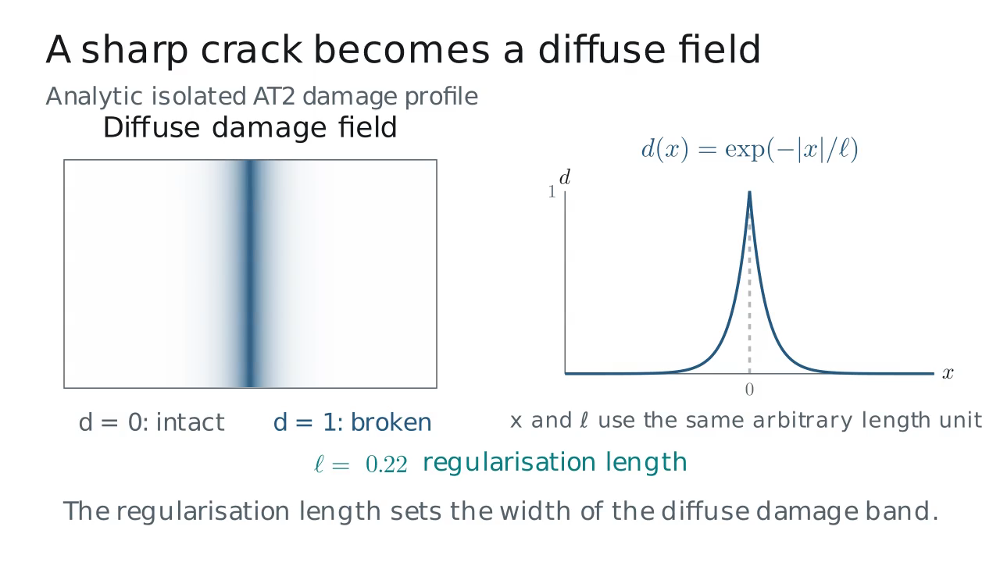
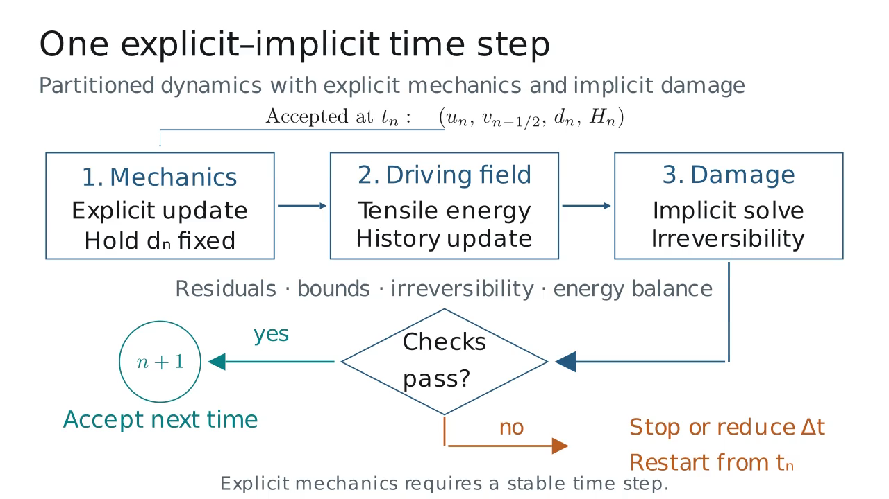
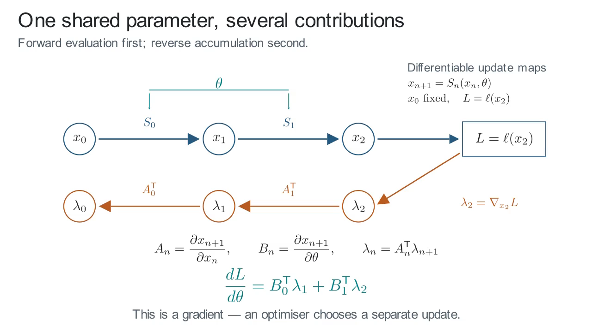
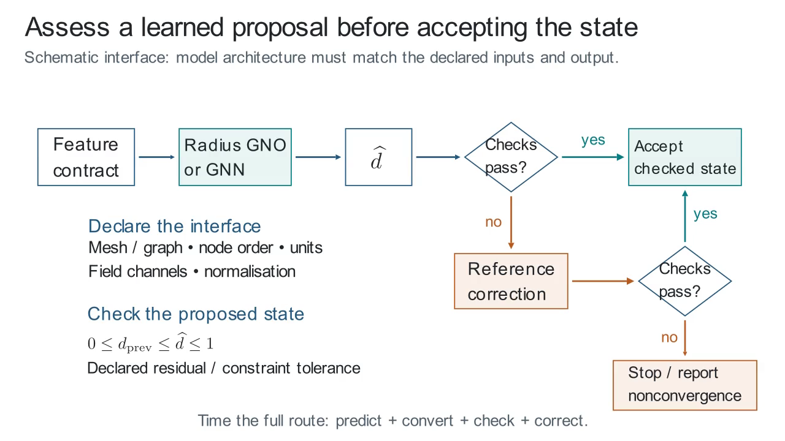

Phase-field fracture: animated explanations
Four short animations connect fracture representation, numerical updates, sensitivities and learned proposals. Pause at each stage and explain the quantities before continuing.
On a small screen, use fullscreen playback to read mathematical labels.
All clips are silent, original teaching diagrams of an analytic profile and computational algorithms.
Download the player notebook with questions and worked answers
L1: energy and regularisation · 24.8 seconds
A sharp crack and its diffuse representation
An isolated analytic AT2 profile connects the damage field to the regularisation length. Increasing the length spreads the band.

Download MP4 Download still frame
{kind=link}
Question. If the regularisation length decreases, what must change in the mesh to resolve the damage band?
Worked answer
The mesh must be refined relative to the length scale and its adequacy checked. The animation varies the regularisation length of an analytic isolated AT2 profile.
Text description of the animation
- A sharp crack marks a discontinuity.
- A continuous damage field represents that crack.
- The isolated AT2 profile decays away from the crack.
- The regularisation length sets the width of the diffuse damage band.
L1: numerical solution · 26.5 seconds
Explicit mechanics and implicit damage
One partitioned physical time step uses accepted damage for explicit mechanics, updates the driving quantity, and solves damage implicitly.

Download MP4 Download still frame
{kind=link}
Question. Which stability requirement governs the explicit mechanics update?
Worked answer
Choose the mechanics timestep according to its explicit stability requirements. Accept the state after the stated checks pass; on failure, stop or reduce the timestep and restart from the accepted state.
Text description of the animation
- Begin at an accepted time level.
- Update mechanics with lagged damage.
- Evaluate the tensile driving/history quantity.
- Solve the implicit damage problem with irreversibility.
- Check residuals, bounds and energy; accept or stop/reduce the timestep.
L2: the chain rule · 27.7 seconds
Backpropagation through several updates
States move forward through two update maps. Adjoint sensitivities move backward and each use of the shared parameter contributes to its gradient.

Download MP4 Download still frame
{kind=link}
Question. Why does the parameter gradient contain a contribution from each update?
Worked answer
The same parameter enters both maps. The chain rule adds both paths to the loss. Here the initial state is fixed and the loss depends on the final state. Parameter-dependent initial states or explicit parameter dependence in the loss contribute additional terms.
Text description of the animation
- Specify a fixed initial state and a shared parameter.
- Evaluate two differentiable update maps and a scalar final loss.
- Propagate the final-state adjoint backward.
- Sum the parameter contribution from every update.
- An optimiser chooses a separate update using the resulting gradient.
L3 / P3: hybrid methods · 26.5 seconds
A learned proposal and a checked correction
A compatible Radius-GNO or GNN produces a proposed damage field. Acceptance depends on declared bounds, residuals and constraints.

Download MP4 Download still frame
{kind=link}
Question. When can a corrected proposal be accepted?
Worked answer
Accept the corrected state when it passes the declared checks. If correction fails, stop and report nonconvergence. Assess interface compatibility, field quality and complete computational cost for the chosen architecture.
Text description of the animation
- Declare mesh/graph, feature ordering, units and normalisation.
- Evaluate a compatible model and obtain a proposal.
- Check bounds, irreversibility and the declared residual/constraint tolerance.
- Accept a qualified state or use reference correction.
- Recheck the correction and accept or report failure; include all overhead in any speed comparison.